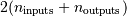
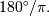

Universal functions (ufunc)¶
A universal function (or ufunc for short) is a function that operates on ndarrays in an element-by-element fashion, supporting array broadcasting, type casting, and several other standard features. That is, a ufunc is a “vectorized” wrapper for a function that takes a fixed number of scalar inputs and produces a fixed number of scalar outputs.
In Numpy, universal functions are instances of the numpy.ufunc class. Many of the built-in functions are implemented in compiled C code, but ufunc instances can also be produced using the frompyfunc factory function.
Broadcasting¶
Each universal function takes array inputs and produces array outputs by performing the core function element-wise on the inputs. Standard broadcasting rules are applied so that inputs not sharing exactly the same shapes can still be usefully operated on. Broadcasting can be understood by four rules:
- All input arrays with ndim smaller than the input array of largest ndim, have 1’s prepended to their shapes.
- The size in each dimension of the output shape is the maximum of all the input sizes in that dimension.
- An input can be used in the calculation if its size in a particular dimension either matches the output size in that dimension, or has value exactly 1.
- If an input has a dimension size of 1 in its shape, the first data entry in that dimension will be used for all calculations along that dimension. In other words, the stepping machinery of the ufunc will simply not step along that dimension (the stride will be 0 for that dimension).
Broadcasting is used throughout NumPy to decide how to handle disparately shaped arrays; for example, all arithmetic operations (+, -, *, ...) between ndarrays broadcast the arrays before operation.
A set of arrays is called “broadcastable” to the same shape if the above rules produce a valid result, i.e., one of the following is true:
- The arrays all have exactly the same shape.
- The arrays all have the same number of dimensions and the length of each dimensions is either a common length or 1.
- The arrays that have too few dimensions can have their shapes prepended with a dimension of length 1 to satisfy property 2.
Example
If a.shape is (5,1), b.shape is (1,6), c.shape is (6,) and d.shape is () so that d is a scalar, then a, b, c, and d are all broadcastable to dimension (5,6); and
- a acts like a (5,6) array where a[:,0] is broadcast to the other columns,
- b acts like a (5,6) array where b[0,:] is broadcast to the other rows,
- c acts like a (1,6) array and therefore like a (5,6) array where c[:] is broadcast to every row, and finally,
- d acts like a (5,6) array where the single value is repeated.
Output type determination¶
The output of the ufunc (and its methods) is not necessarily an ndarray, if all input arguments are not ndarrays.
All output arrays will be passed to the __array_prepare__ and __array_wrap__ methods of the input (besides ndarrays, and scalars) that defines it and has the highest __array_priority__ of any other input to the universal function. The default __array_priority__ of the ndarray is 0.0, and the default __array_priority__ of a subtype is 1.0. Matrices have __array_priority__ equal to 10.0.
All ufuncs can also take output arguments. If necessary, output will be cast to the data-type(s) of the provided output array(s). If a class with an __array__ method is used for the output, results will be written to the object returned by __array__. Then, if the class also has an __array_prepare__ method, it is called so metadata may be determined based on the context of the ufunc (the context consisting of the ufunc itself, the arguments passed to the ufunc, and the ufunc domain.) The array object returned by __array_prepare__ is passed to the ufunc for computation. Finally, if the class also has an __array_wrap__ method, the returned ndarray result will be passed to that method just before passing control back to the caller.
Use of internal buffers¶
Internally, buffers are used for misaligned data, swapped data, and data that has to be converted from one data type to another. The size of internal buffers is settable on a per-thread basis. There can be up to  buffers of the specified size created to handle the data from all the inputs and outputs of a ufunc. The default size of a buffer is 10,000 elements. Whenever buffer-based calculation would be needed, but all input arrays are smaller than the buffer size, those misbehaved or incorrectly-typed arrays will be copied before the calculation proceeds. Adjusting the size of the buffer may therefore alter the speed at which ufunc calculations of various sorts are completed. A simple interface for setting this variable is accessible using the function
| setbufsize(size) | Set the size of the buffer used in ufuncs. |
Error handling¶
Universal functions can trip special floating-point status registers in your hardware (such as divide-by-zero). If available on your platform, these registers will be regularly checked during calculation. Error handling is controlled on a per-thread basis, and can be configured using the functions
| seterr([all, divide, over, under, invalid]) | Set how floating-point errors are handled. |
| seterrcall(func) | Set the floating-point error callback function or log object. |
Casting Rules¶
Note
In NumPy 1.6.0, a type promotion API was created to encapsulate the mechansim for determining output types. See the functions result_type, promote_types, and min_scalar_type for more details.
At the core of every ufunc is a one-dimensional strided loop that implements the actual function for a specific type combination. When a ufunc is created, it is given a static list of inner loops and a corresponding list of type signatures over which the ufunc operates. The ufunc machinery uses this list to determine which inner loop to use for a particular case. You can inspect the .types attribute for a particular ufunc to see which type combinations have a defined inner loop and which output type they produce (character codes are used in said output for brevity).
Casting must be done on one or more of the inputs whenever the ufunc does not have a core loop implementation for the input types provided. If an implementation for the input types cannot be found, then the algorithm searches for an implementation with a type signature to which all of the inputs can be cast “safely.” The first one it finds in its internal list of loops is selected and performed, after all necessary type casting. Recall that internal copies during ufuncs (even for casting) are limited to the size of an internal buffer (which is user settable).
Note
Universal functions in NumPy are flexible enough to have mixed type signatures. Thus, for example, a universal function could be defined that works with floating-point and integer values. See ldexp for an example.
By the above description, the casting rules are essentially implemented by the question of when a data type can be cast “safely” to another data type. The answer to this question can be determined in Python with a function call: can_cast(fromtype, totype). The Figure below shows the results of this call for the 24 internally supported types on the author’s 64-bit system. You can generate this table for your system with the code given in the Figure.
Figure
Code segment showing the “can cast safely” table for a 32-bit system.
>>> def print_table(ntypes):
... print 'X',
... for char in ntypes: print char,
... print
... for row in ntypes:
... print row,
... for col in ntypes:
... print int(np.can_cast(row, col)),
... print
>>> print_table(np.typecodes['All'])
X ? b h i l q p B H I L Q P e f d g F D G S U V O M m
? 1 1 1 1 1 1 1 1 1 1 1 1 1 1 1 1 1 1 1 1 1 1 1 1 1 1
b 0 1 1 1 1 1 1 0 0 0 0 0 0 1 1 1 1 1 1 1 1 1 1 1 0 0
h 0 0 1 1 1 1 1 0 0 0 0 0 0 0 1 1 1 1 1 1 1 1 1 1 0 0
i 0 0 0 1 1 1 1 0 0 0 0 0 0 0 0 1 1 0 1 1 1 1 1 1 0 0
l 0 0 0 0 1 1 1 0 0 0 0 0 0 0 0 1 1 0 1 1 1 1 1 1 0 0
q 0 0 0 0 1 1 1 0 0 0 0 0 0 0 0 1 1 0 1 1 1 1 1 1 0 0
p 0 0 0 0 1 1 1 0 0 0 0 0 0 0 0 1 1 0 1 1 1 1 1 1 0 0
B 0 0 1 1 1 1 1 1 1 1 1 1 1 1 1 1 1 1 1 1 1 1 1 1 0 0
H 0 0 0 1 1 1 1 0 1 1 1 1 1 0 1 1 1 1 1 1 1 1 1 1 0 0
I 0 0 0 0 1 1 1 0 0 1 1 1 1 0 0 1 1 0 1 1 1 1 1 1 0 0
L 0 0 0 0 0 0 0 0 0 0 1 1 1 0 0 1 1 0 1 1 1 1 1 1 0 0
Q 0 0 0 0 0 0 0 0 0 0 1 1 1 0 0 1 1 0 1 1 1 1 1 1 0 0
P 0 0 0 0 0 0 0 0 0 0 1 1 1 0 0 1 1 0 1 1 1 1 1 1 0 0
e 0 0 0 0 0 0 0 0 0 0 0 0 0 1 1 1 1 1 1 1 1 1 1 1 0 0
f 0 0 0 0 0 0 0 0 0 0 0 0 0 0 1 1 1 1 1 1 1 1 1 1 0 0
d 0 0 0 0 0 0 0 0 0 0 0 0 0 0 0 1 1 0 1 1 1 1 1 1 0 0
g 0 0 0 0 0 0 0 0 0 0 0 0 0 0 0 0 1 0 0 1 1 1 1 1 0 0
F 0 0 0 0 0 0 0 0 0 0 0 0 0 0 0 0 0 1 1 1 1 1 1 1 0 0
D 0 0 0 0 0 0 0 0 0 0 0 0 0 0 0 0 0 0 1 1 1 1 1 1 0 0
G 0 0 0 0 0 0 0 0 0 0 0 0 0 0 0 0 0 0 0 1 1 1 1 1 0 0
S 0 0 0 0 0 0 0 0 0 0 0 0 0 0 0 0 0 0 0 0 1 1 1 1 0 0
U 0 0 0 0 0 0 0 0 0 0 0 0 0 0 0 0 0 0 0 0 0 1 1 1 0 0
V 0 0 0 0 0 0 0 0 0 0 0 0 0 0 0 0 0 0 0 0 0 0 1 1 0 0
O 0 0 0 0 0 0 0 0 0 0 0 0 0 0 0 0 0 0 0 0 0 0 1 1 0 0
M 0 0 0 0 0 0 0 0 0 0 0 0 0 0 0 0 0 0 0 0 0 0 0 0 1 0
m 0 0 0 0 0 0 0 0 0 0 0 0 0 0 0 0 0 0 0 0 0 0 0 0 0 1
You should note that, while included in the table for completeness, the ‘S’, ‘U’, and ‘V’ types cannot be operated on by ufuncs. Also, note that on a 32-bit system the integer types may have different sizes, resulting in a slightly altered table.
Mixed scalar-array operations use a different set of casting rules that ensure that a scalar cannot “upcast” an array unless the scalar is of a fundamentally different kind of data (i.e., under a different hierarchy in the data-type hierarchy) than the array. This rule enables you to use scalar constants in your code (which, as Python types, are interpreted accordingly in ufuncs) without worrying about whether the precision of the scalar constant will cause upcasting on your large (small precision) array.
ufunc¶
Optional keyword arguments¶
All ufuncs take optional keyword arguments. Most of these represent advanced usage and will not typically be used.
out
New in version 1.6.
The first output can provided as either a positional or a keyword parameter.
where
New in version 1.7.
Accepts a boolean array which is broadcast together with the operands. Values of True indicate to calculate the ufunc at that position, values of False indicate to leave the value in the output alone.
casting
New in version 1.6.
Provides a policy for what kind of casting is permitted. For compatibility with previous versions of NumPy, this defaults to ‘unsafe’. May be ‘no’, ‘equiv’, ‘safe’, ‘same_kind’, or ‘unsafe’. See can_cast for explanations of the parameter values.
In a future version of numpy, this argument will default to ‘same_kind’. As part of this transition, starting in version 1.7, ufuncs will produce a DeprecationWarning for calls which are allowed under the ‘unsafe’ rules, but not under the ‘same_kind’ rules.
order
New in version 1.6.
Specifies the calculation iteration order/memory layout of the output array. Defaults to ‘K’. ‘C’ means the output should be C-contiguous, ‘F’ means F-contiguous, ‘A’ means F-contiguous if the inputs are F-contiguous and not also not C-contiguous, C-contiguous otherwise, and ‘K’ means to match the element ordering of the inputs as closely as possible.
dtype
New in version 1.6.
Overrides the dtype of the calculation and output arrays. Similar to sig.
subok
New in version 1.6.
Defaults to true. If set to false, the output will always be a strict array, not a subtype.
sig
Either a data-type, a tuple of data-types, or a special signature string indicating the input and output types of a ufunc. This argument allows you to provide a specific signature for the 1-d loop to use in the underlying calculation. If the loop specified does not exist for the ufunc, then a TypeError is raised. Normally, a suitable loop is found automatically by comparing the input types with what is available and searching for a loop with data-types to which all inputs can be cast safely. This keyword argument lets you bypass that search and choose a particular loop. A list of available signatures is provided by the types attribute of the ufunc object.
extobj
a list of length 1, 2, or 3 specifying the ufunc buffer-size, the error mode integer, and the error call-back function. Normally, these values are looked up in a thread-specific dictionary. Passing them here circumvents that look up and uses the low-level specification provided for the error mode. This may be useful, for example, as an optimization for calculations requiring many ufunc calls on small arrays in a loop.
Attributes¶
There are some informational attributes that universal functions possess. None of the attributes can be set.
| __doc__ | A docstring for each ufunc. The first part of the docstring is dynamically generated from the number of outputs, the name, and the number of inputs. The second part of the docstring is provided at creation time and stored with the ufunc. |
| __name__ | The name of the ufunc. |
| ufunc.nin | The number of inputs. |
| ufunc.nout | The number of outputs. |
| ufunc.nargs | The number of arguments. |
| ufunc.ntypes | The number of types. |
| ufunc.types | Returns a list with types grouped input->output. |
| ufunc.identity | The identity value. |
Methods¶
All ufuncs have four methods. However, these methods only make sense on ufuncs that take two input arguments and return one output argument. Attempting to call these methods on other ufuncs will cause a ValueError. The reduce-like methods all take an axis keyword and a dtype keyword, and the arrays must all have dimension >= 1. The axis keyword specifies the axis of the array over which the reduction will take place and may be negative, but must be an integer. The dtype keyword allows you to manage a very common problem that arises when naively using {op}.reduce. Sometimes you may have an array of a certain data type and wish to add up all of its elements, but the result does not fit into the data type of the array. This commonly happens if you have an array of single-byte integers. The dtype keyword allows you to alter the data type over which the reduction takes place (and therefore the type of the output). Thus, you can ensure that the output is a data type with precision large enough to handle your output. The responsibility of altering the reduce type is mostly up to you. There is one exception: if no dtype is given for a reduction on the “add” or “multiply” operations, then if the input type is an integer (or Boolean) data-type and smaller than the size of the int_ data type, it will be internally upcast to the int_ (or uint) data-type.
Ufuncs also have a fifth method that allows in place operations to be performed using fancy indexing. No buffering is used on the dimensions where fancy indexing is used, so the fancy index can list an item more than once and the operation will be performed on the result of the previous operation for that item.
| ufunc.reduce(a[, axis, dtype, out, keepdims]) | Reduces a‘s dimension by one, by applying ufunc along one axis. |
| ufunc.accumulate(array[, axis, dtype, out]) | Accumulate the result of applying the operator to all elements. |
| ufunc.reduceat(a, indices[, axis, dtype, out]) | Performs a (local) reduce with specified slices over a single axis. |
| ufunc.outer(A, B) | Apply the ufunc op to all pairs (a, b) with a in A and b in B. |
| ufunc.at(a, indices[, b]) | Performs unbuffered in place operation on operand ‘a’ for elements specified by ‘indices’. |
Warning
A reduce-like operation on an array with a data-type that has a range “too small” to handle the result will silently wrap. One should use dtype to increase the size of the data-type over which reduction takes place.
Available ufuncs¶
There are currently more than 60 universal functions defined in numpy on one or more types, covering a wide variety of operations. Some of these ufuncs are called automatically on arrays when the relevant infix notation is used (e.g., add(a, b) is called internally when a + b is written and a or b is an ndarray). Nevertheless, you may still want to use the ufunc call in order to use the optional output argument(s) to place the output(s) in an object (or objects) of your choice.
Recall that each ufunc operates element-by-element. Therefore, each ufunc will be described as if acting on a set of scalar inputs to return a set of scalar outputs.
Note
The ufunc still returns its output(s) even if you use the optional output argument(s).
Math operations¶
| add(x1, x2[, out]) | Add arguments element-wise. |
| subtract(x1, x2[, out]) | Subtract arguments, element-wise. |
| multiply(x1, x2[, out]) | Multiply arguments element-wise. |
| divide(x1, x2[, out]) | Divide arguments element-wise. |
| logaddexp(x1, x2[, out]) | Logarithm of the sum of exponentiations of the inputs. |
| logaddexp2(x1, x2[, out]) | Logarithm of the sum of exponentiations of the inputs in base-2. |
| true_divide(x1, x2[, out]) | Returns a true division of the inputs, element-wise. |
| floor_divide(x1, x2[, out]) | Return the largest integer smaller or equal to the division of the inputs. |
| negative(x[, out]) | Returns an array with the negative of each element of the original array. |
| power(x1, x2[, out]) | First array elements raised to powers from second array, element-wise. |
| remainder(x1, x2[, out]) | Return element-wise remainder of division. |
| mod(x1, x2[, out]) | Return element-wise remainder of division. |
| fmod(x1, x2[, out]) | Return the element-wise remainder of division. |
| absolute(x[, out]) | Calculate the absolute value element-wise. |
| rint(x[, out]) | Round elements of the array to the nearest integer. |
| sign(x[, out]) | Returns an element-wise indication of the sign of a number. |
| conj(x[, out]) | Return the complex conjugate, element-wise. |
| exp(x[, out]) | Calculate the exponential of all elements in the input array. |
| exp2(x[, out]) | Calculate 2**p for all p in the input array. |
| log(x[, out]) | Natural logarithm, element-wise. |
| log2(x[, out]) | Base-2 logarithm of x. |
| log10(x[, out]) | Return the base 10 logarithm of the input array, element-wise. |
| expm1(x[, out]) | Calculate exp(x) - 1 for all elements in the array. |
| log1p(x[, out]) | Return the natural logarithm of one plus the input array, element-wise. |
| sqrt(x[, out]) | Return the positive square-root of an array, element-wise. |
| square(x[, out]) | Return the element-wise square of the input. |
| reciprocal(x[, out]) | Return the reciprocal of the argument, element-wise. |
| ones_like(a[, dtype, order, subok]) | Return an array of ones with the same shape and type as a given array. |
Tip
The optional output arguments can be used to help you save memory for large calculations. If your arrays are large, complicated expressions can take longer than absolutely necessary due to the creation and (later) destruction of temporary calculation spaces. For example, the expression G = a * b + c is equivalent to t1 = A * B; G = T1 + C; del t1. It will be more quickly executed as G = A * B; add(G, C, G) which is the same as G = A * B; G += C.
Trigonometric functions¶
All trigonometric functions use radians when an angle is called for. The ratio of degrees to radians is 
| sin(x[, out]) | Trigonometric sine, element-wise. |
| cos(x[, out]) | Cosine elementwise. |
| tan(x[, out]) | Compute tangent element-wise. |
| arcsin(x[, out]) | Inverse sine, element-wise. |
| arccos(x[, out]) | Trigonometric inverse cosine, element-wise. |
| arctan(x[, out]) | Trigonometric inverse tangent, element-wise. |
| arctan2(x1, x2[, out]) | Element-wise arc tangent of x1/x2 choosing the quadrant correctly. |
| hypot(x1, x2[, out]) | Given the “legs” of a right triangle, return its hypotenuse. |
| sinh(x[, out]) | Hyperbolic sine, element-wise. |
| cosh(x[, out]) | Hyperbolic cosine, element-wise. |
| tanh(x[, out]) | Compute hyperbolic tangent element-wise. |
| arcsinh(x[, out]) | Inverse hyperbolic sine elementwise. |
| arccosh(x[, out]) | Inverse hyperbolic cosine, elementwise. |
| arctanh(x[, out]) | Inverse hyperbolic tangent elementwise. |
| deg2rad(x[, out]) | Convert angles from degrees to radians. |
| rad2deg(x[, out]) | Convert angles from radians to degrees. |
Bit-twiddling functions¶
These function all require integer arguments and they manipulate the bit-pattern of those arguments.
| bitwise_and(x1, x2[, out]) | Compute the bit-wise AND of two arrays element-wise. |
| bitwise_or(x1, x2[, out]) | Compute the bit-wise OR of two arrays element-wise. |
| bitwise_xor(x1, x2[, out]) | Compute the bit-wise XOR of two arrays element-wise. |
| invert(x[, out]) | Compute bit-wise inversion, or bit-wise NOT, element-wise. |
| left_shift(x1, x2[, out]) | Shift the bits of an integer to the left. |
| right_shift(x1, x2[, out]) | Shift the bits of an integer to the right. |
Comparison functions¶
| greater(x1, x2[, out]) | Return the truth value of (x1 > x2) element-wise. |
| greater_equal(x1, x2[, out]) | Return the truth value of (x1 >= x2) element-wise. |
| less(x1, x2[, out]) | Return the truth value of (x1 < x2) element-wise. |
| less_equal(x1, x2[, out]) | Return the truth value of (x1 =< x2) element-wise. |
| not_equal(x1, x2[, out]) | Return (x1 != x2) element-wise. |
| equal(x1, x2[, out]) | Return (x1 == x2) element-wise. |
Warning
Do not use the Python keywords and and or to combine logical array expressions. These keywords will test the truth value of the entire array (not element-by-element as you might expect). Use the bitwise operators & and | instead.
| logical_and(x1, x2[, out]) | Compute the truth value of x1 AND x2 elementwise. |
| logical_or(x1, x2[, out]) | Compute the truth value of x1 OR x2 elementwise. |
| logical_xor(x1, x2[, out]) | Compute the truth value of x1 XOR x2, element-wise. |
| logical_not(x[, out]) | Compute the truth value of NOT x elementwise. |
Warning
The bit-wise operators & and | are the proper way to perform element-by-element array comparisons. Be sure you understand the operator precedence: (a > 2) & (a < 5) is the proper syntax because a > 2 & a < 5 will result in an error due to the fact that 2 & a is evaluated first.
| maximum(x1, x2[, out]) | Element-wise maximum of array elements. |
Tip
The Python function max() will find the maximum over a one-dimensional array, but it will do so using a slower sequence interface. The reduce method of the maximum ufunc is much faster. Also, the max() method will not give answers you might expect for arrays with greater than one dimension. The reduce method of minimum also allows you to compute a total minimum over an array.
| minimum(x1, x2[, out]) | Element-wise minimum of array elements. |
Warning
the behavior of maximum(a, b) is different than that of max(a, b). As a ufunc, maximum(a, b) performs an element-by-element comparison of a and b and chooses each element of the result according to which element in the two arrays is larger. In contrast, max(a, b) treats the objects a and b as a whole, looks at the (total) truth value of a > b and uses it to return either a or b (as a whole). A similar difference exists between minimum(a, b) and min(a, b).
| fmax(x1, x2[, out]) | Element-wise maximum of array elements. |
| fmin(x1, x2[, out]) | Element-wise minimum of array elements. |
Floating functions¶
Recall that all of these functions work element-by-element over an array, returning an array output. The description details only a single operation.
| isreal(x) | Returns a bool array, where True if input element is real. |
| iscomplex(x) | Returns a bool array, where True if input element is complex. |
| isfinite(x[, out]) | Test element-wise for finite-ness (not infinity or not Not a Number). |
| isinf(x[, out]) | Test element-wise for positive or negative infinity. |
| isnan(x[, out]) | Test element-wise for Not a Number (NaN), return result as a bool array. |
| signbit(x[, out]) | Returns element-wise True where signbit is set (less than zero). |
| copysign(x1, x2[, out]) | Change the sign of x1 to that of x2, element-wise. |
| nextafter(x1, x2[, out]) | Return the next representable floating-point value after x1 in the direction of x2 element-wise. |
| modf(x[, out1, out2]) | Return the fractional and integral parts of an array, element-wise. |
| ldexp(x1, x2[, out]) | Compute y = x1 * 2**x2. |
| frexp(x[, out1, out2]) | Split the number, x, into a normalized fraction (y1) and exponent (y2) |
| fmod(x1, x2[, out]) | Return the element-wise remainder of division. |
| floor(x[, out]) | Return the floor of the input, element-wise. |
| ceil(x[, out]) | Return the ceiling of the input, element-wise. |
| trunc(x[, out]) | Return the truncated value of the input, element-wise. |